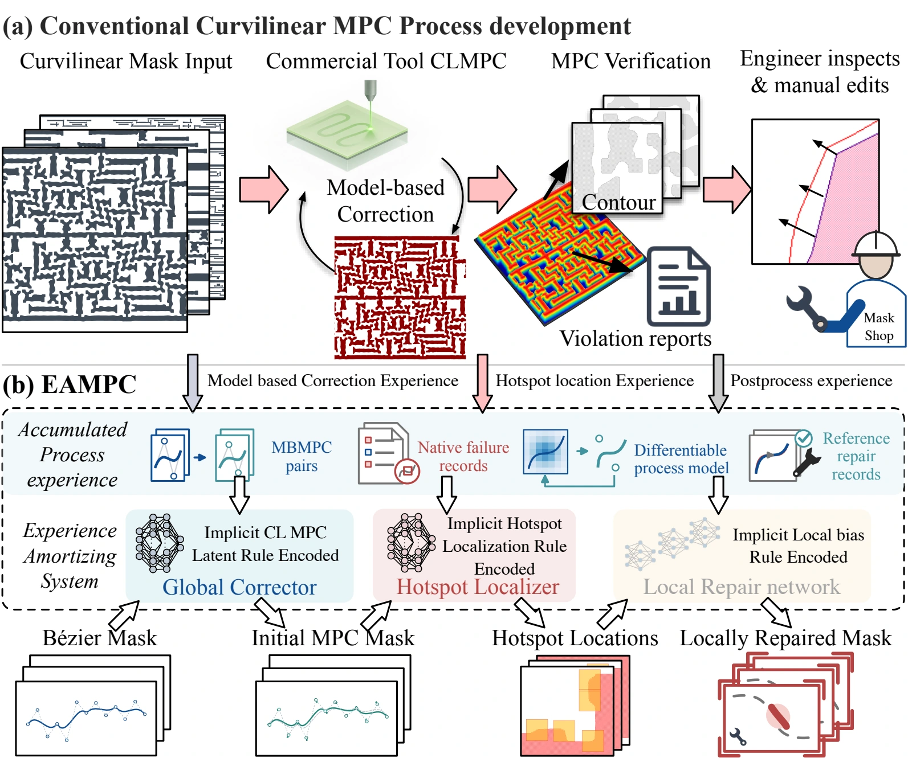
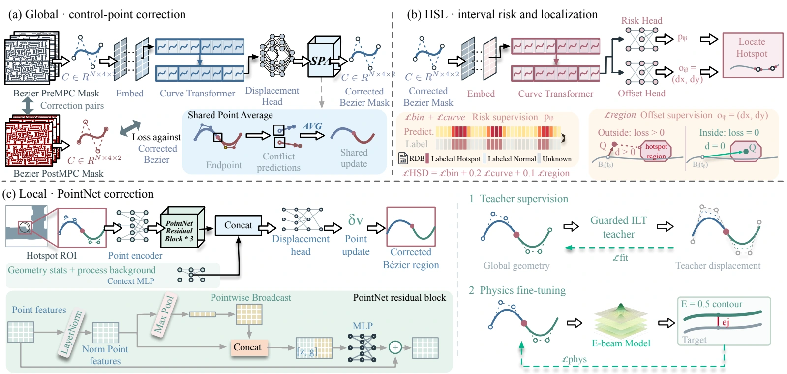

EAMPC: An Experience-Amortized System for Curvilinear Mask Process Correction
Mask shops correct, verify, and repair layouts every day. EAMPC follows the same sequence and learns from the records it leaves behind, so subsequent layouts can start from accumulated correction experience.
Explore a correction01 / WORKFLOW
Every layout leaves a record.
As the mask shop corrects, verifies, and repairs new layouts, its archive grows. The next layout still begins a new correction run. EAMPC uses those saved results as training examples.
Mask shop archive
SOC-L48 · Target and commercial MPC mask form a correction pair.
↔ Drag to rotate · Saved SOC-L48 exampleView the workflow figure from the paper

02 / METHOD
From curves to corrections.
Three sources of supervision
Each network learns from a different part of the workflow.
Saved examples enter their corresponding networks.
↔ Drag to rotate · Training schematic
- Global
A curve Transformer predicts displacements of Bézier control points from neighboring curves. Consistent updates at shared endpoints keep the boundary connected.
- HSL
The localizer learns from RDB reports and predicts hotspot risk and a location offset along each curve.
- Local
The local corrector learns from ILT repairs and is fine-tuned through a differentiable process model. A guard penalty discourages error increases around the edited region.
03 / EXPERIMENTS
Follow a hotspot into the contour.
Watch the mask and simulated contour change together, from the input layout through global correction to local repair.
Selected diagnostic examples. Animation interpolates between saved geometries and simulated contours.
Contour comparisons across AES, FFT and SOC layouts
The global corrector predicts the first corrected contour. Its remaining gap to the target is visible in the inset.
Target Global Global + LocalDashed line: target edgeReconstructed from saved contours. Height and color are illustrative.
54.57 s for commercial curvilinear MPC
04 / REUSE
Pay for adaptation once.
With historical correction pairs and verification reports already available, EAMPC fine-tunes once and reuses the adapted models on subsequent layouts. Each additional layout adds less correction time, gradually recovering the upfront cost.
When does the time saved pay back adaptation?
Estimated from the six layout groups in the paper
One core equivalent is an 8 × 8 µm² layout area. The estimated break-even is about 123 core equivalents, or an 89 × 89 µm² square. Larger-layout measurements are shown below.
Measured runtime on larger SOC-L46 layouts
- CPU
- 2 × Intel Xeon Platinum 8462Y+32 cores each · 64 physical cores · 128 hardware threads
- GPU
- 4 × NVIDIA H100 PCIe80 GB per GPU
- Runtime configuration
- CentOS Linux 84 CPU threads per commercial MPC job · 1 GPU per EAMPC inference job
6.05× overall speedup Measured layout size · wafer equivalent